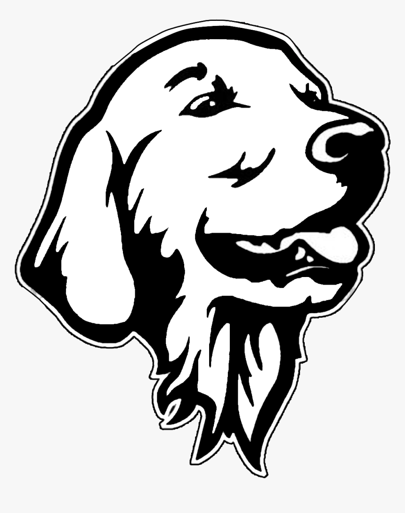
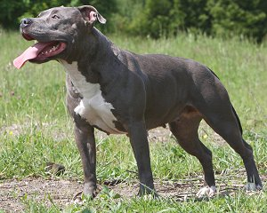

First Dog! Bandit
Bandit is our very loving, sometimes clumsy, dog who loves every person he sees. Our helpful partners at the American Kennel Club have a very helpful article to help decide if german shepherds are right for you
Second Dog! Jemma
Jemma is our Pitbull rescue dog after a long legal battle to keep her out of abusers hands. Our helpful partners at the American Kennel Club have a very helpful article to help decide if pitbulls are right for you
 Nodaway County's animal shelter website